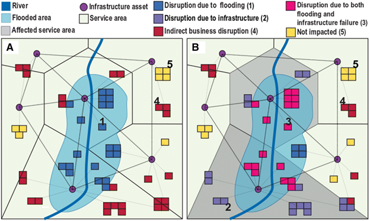
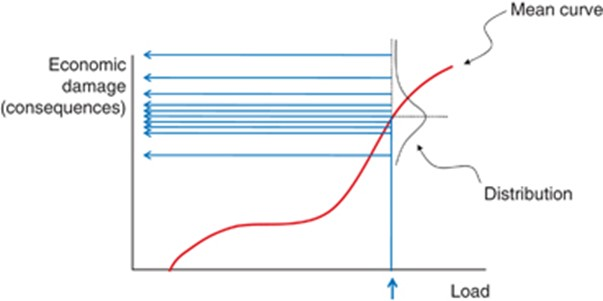
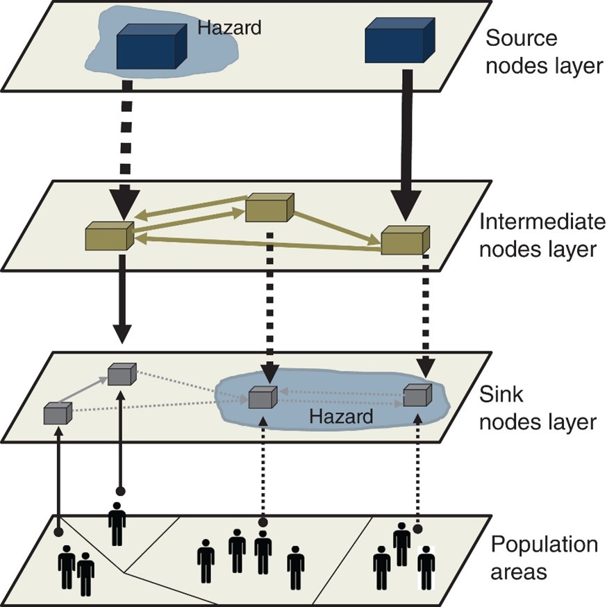

This mini-lecture provides an overview of the full range of impacts of infrastructure disruptions. First, the difference between direct and indirect consequences of infrastructure disruption is discussed, followed by the potential impacts of infrastructure disruptions to people and the economy.
Infrastructure is vulnerable to climate hazards such as flooding. Depending on the severity of the hazard and the vulnerability of an asset, infrastructure assets may fail and cause a range of disruptions. So far, only direct damages to infrastructure have been discussed in depth, in Lecture 10.
This lecture will explore the full range of disruptions, including a recap on direct damage assessment in the following sub-section (Direct damages - recap), followed by an overview of cascading impacts to other infrastructure systems (Indirect damages), dependent populations (Disruptions to people) and economic activities (Disruptions to the economy).
Figure 11.1.1 provides an overview of the multiple potential impacts of flood-induced infrastructure failure. Boxes are affected by flooding in various different ways, either directly due to flood inundation, indirectly due to power supply cuts as a result of electricity substations being inundated, or due to supply chain disruptions from dependencies with other entities affected by flooding.
The difference between the two panels shows how the problem can be approached differently, with different outcomes. On the left, the entities that are indirectly affected by electricity disruptions are not considered, whereas on the right, this is accounted for. The affected service area, represented in grey shading, is much greater when accounting for the indirect impacts of electricity supply disruptions, demonstrating the importance of accounting for the full range of consequences of asset failure when quantifying impacts to populations and businesses.

Figure 11.1.1: Illustration of the range of types of impact of flood damages, including direct impacts and indirect impacts to assets that are dependent on affected business facilities or infrastructure services (Koks et al. 2019)
The following sections will introduce the key concepts that are important for understanding the full range of disruptions caused by infrastructure failures.
Direct damage to infrastructure is defined as the physical stock damaged during an extreme event, such as flooding. Different infrastructures have 1) different vulnerabilities to failure for a given severity of hazard and 2) different economic costs associated with failure.
Asset vulnerability can be formalised through fragility curves, which were discussed in Lecture block 10. This can be used to understand the economic burden of natural hazards on infrastructure by assigning a monetary value to the level of damage associated with a given shock event. This economic damage is a function of an asset’s reconstruction costs.
Figure 11.1.2 below shows the relationship between load (e.g., flood depth) and economic damages (Lamb et al. 2010).

Figure 11.1.2: Schematic showing the relationship between a given load and economic damages, a distribution of potential economic damages associated with a given load can be used to incorporate uncertainty into the analysis (Lamb et al. 2010). Note that that in the figure, the x axis describes a “load” which describes the severity of a particular hazard. For example, in the case of flooding, the “load” may be the depth of flood inundation.
This is a commonly applied method by engineers and other stakeholders to form a basis for decision-making. However, this calculation does not account for the indirect impacts of infrastructure assets on other infrastructure systems.
Infrastructure systems are interconnected, and can thus be conceptualised as a system of interconnected systems, or a system-of-systems.
A characteristic of this complex, interwoven infrastructure system-of-systems is that asset failures in one system may have cascading impacts on other systems.
For example, water infrastructure assets that abstract, pump and treat water, are strongly dependent on having a reliable and consistent electricity supply. Therefore, when the electricity substation that supplies a water asset is disrupted, the impacts of that will not only be felt at the electricity substation, but also at the dependent water supply infrastructure.
These second-order impacts of infrastructure failures on the operations of other infrastructure systems are known as indirect damages in order to distinguish from the previously discussed direct damages.
Indirect damages may significantly contribute to the overall damages incurred during an extreme event, and may even outweigh the direct damages incurred. This will be discussed further in mini-lecture 11.2.
Society is dependent on the basic services provided by infrastructure systems such as electricity, water and transport. The criticality of different infrastructure assets is a function of the population they serve, with more critical assets serving a greater number of people. This metric of criticality is important for decision-makers who wish to efficiently allocate funds to the assets that serve large populations who are, therefore, exposed to asset-level disruptions.
It is important to consider both direct and indirect effects when calculating the level of disruption caused by infrastructure failure. For example, consider two electricity substations that are equally exposed to flooding. Both assets supply 1,000 households but one also supplies a water treatment facility which, in turn, supplies a further 1,000 people. The most efficient allocation of available funds for flood protection works would be towards the substation that indirectly serves the further 1,000 people served by the water treatment facility.
Figure 11.1.3 shows how the disruption cascades from (1) source nodes – which generate resources, (2) intermediate nodes – which transmit resources from the source nodes to further nodes, and (3) sink nodes – which are connected directly to the customers to deliver the resources generated at the source nodes. Quantifying the extent of infrastructure disruptions to people will be discussed in depth in mini-lecture 11.3.

Figure 11.1.3: Illustration of how a hazard goes on to affect dependent populations and how the complex relationship between infrastructure assets will determine the extent of a disruption (Pant et al. 2018)
Various economic activities are also affected by disruptions to infrastructure services.
One example of this is the impact of disruptions to port infrastructure e.g. caused by hurricanes - on supply chains. Such supply chain disruptions could go on to have cascading repercussions on manufacturing operations, which may impact other dependent economic activities and/or end-users.
Manufacturing operations are not only dependent on transport infrastructure, but also electricity and water. Therefore, if the electricity or water assets that supply a factory is disrupted, this may in turn disrupt operations at the factory.
The wider economic impacts of infrastructure disruptions are important to understand for decision-making. This will be discussed in mini-lecture 11.4.
The mini-lecture provided an overview of the multiple outcomes of infrastructure failures on other infrastructure assets, to dependent populations and various forms of economic activity. You should now be able to recognise that infrastructure failures may propagate to affect other infrastructure assets, dependent populations and the economy, as well as the importance of considering these multiple outcomes of failure for risk analysis.